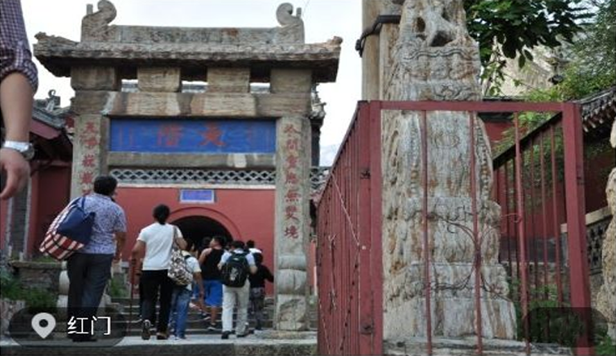
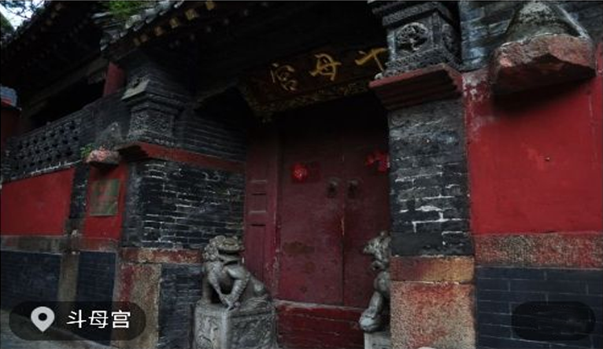
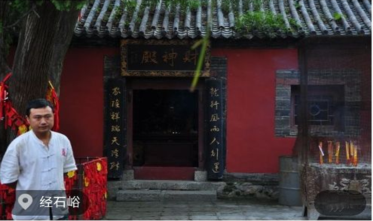
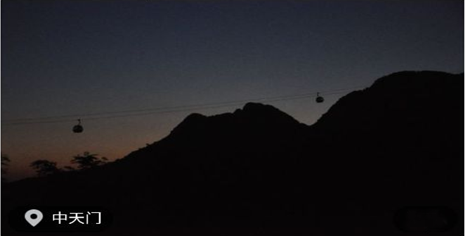
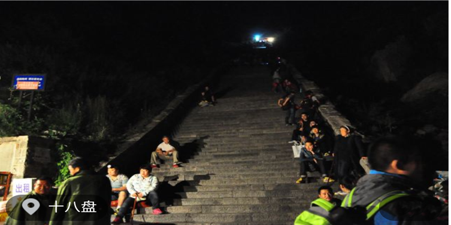
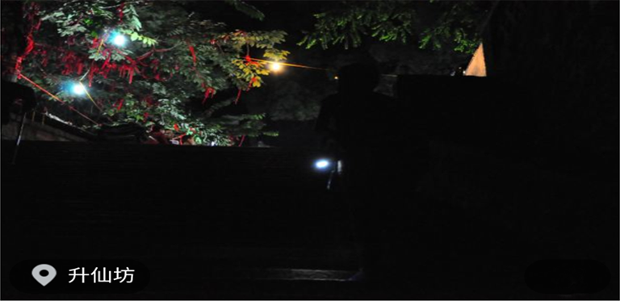
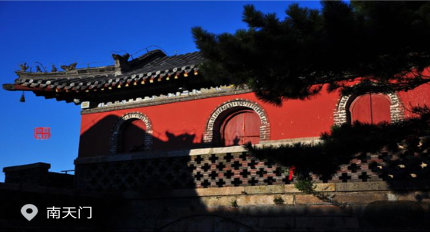
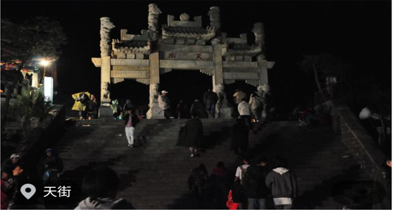
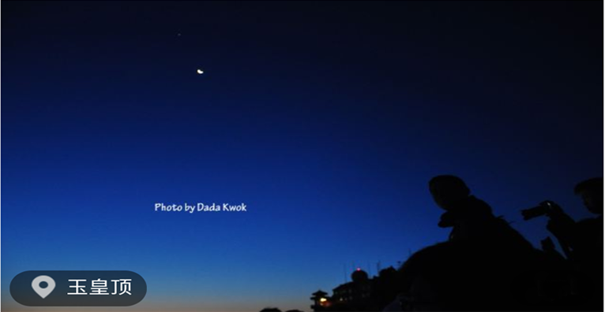
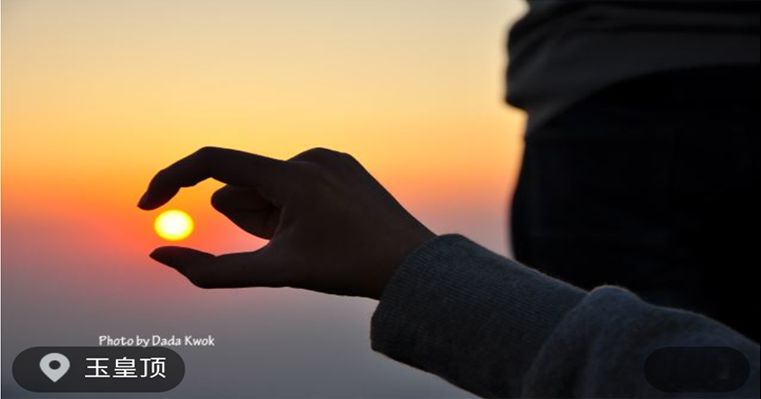

游记详情
夜爬泰山，璀璨的夜晚与惊艳的日出
出发时间
行程天数
爬的山很多了，想换一种爬山方式，于是在泰山，选择了夜爬。
深更半夜的眼前一抹黑，一手拿手电筒一手拄登山杖，打着哈欠，连滚带爬跌到山顶，就为了在5点前等日出。不过夜爬或许就是泰山的一大特色，本以为夜晚的大山除了寂静就是寂静，没想到晚上爬山的人好像比白天还多，成群结队的登山者如朝圣般往山顶涌去。现在回想起来，觉得在夜里爬山虽然没能看到经典的泰山风景，但是那一种从未有过的感受却让我久久回味。在晴朗的夜空下， 迎着漫天的星光，向着光明前行。夜晚的泰山，有着一-种别样的美丽!
第一天中午火车从.上海直达泰山，打车到红门，下午在山脚下的青旅坐了一会儿，5点钟慢悠悠开始从红门]出发了。
别总说没时间旅行，爬泰山一个周末就足够了，交通很方便，火车直达:8月31日上海一泰安G126高铁11:15发车，三小时到达9月1日泰安一上海G139高铁16:10发车，三小时回沪
关于路线:(还是经典的登山路线)D1(白天) :红门]-万仙楼一斗母宫一经石峪一壶天阁一水簾洞一中天门D2 (夜爬) :中天门一云步桥一五大夫松一望人松一十八盘一升仙坊一南天门一天街一碧霞祠一玉皇顶一桃花峪一黑龙潭一彩石溪
TIPS:1.我在8月末爬的泰山，白天短袖工装裤， 备冲锋衣一件，没有冲锋衣可在山上沿途租军大衣，10元/件2. 20-30L背包足够, 登山杖一支，手电筒一支3.可自备泡面与水杯或饮料，山上贵4.晚上爬山若是身体好不会感觉太冷，别人都穿着外套，我穿一件短T还冒汗5.带够300- 500左右的现金,考虑山上的餐饮住宿6.没有登山杖的可以在沿途买，2元一根木质登山杖，自己试了下，用一次感觉质量还是可靠的
关于住宿:1.若是夜爬， 没必要浪费太多银子，在中天门]或山脚^下的青旅找个床位就可以了，毕竟睡不了几个小时 2.住宿最好提前订，因为预定和临时订，那价格不会差一点点的3.我们大约7点爬到中天门，随便吃了碗面后在中天门]找了预订的玉液泉宾馆，电话0538-8226740, 30元一一个床位，但是床位间环境不咋滴，于是跟老板商量，加了点钱换了个简易标间，不带卫生间，还算比较划算了。
凌晨两点听到外面稀里哗啦的脚步声，大家都开始起床夜爬了，赶紧起床，跟上大部队，开始登顶。
泰山，世界文化遗产和世界自然遗产，世界地质公园， 中国AAAAA级旅游景区，首批全国文明风景旅游区示范点，位于山东省泰安市中部。主峰玉皇顶海拔1545米，气势雄伟磅礴，有“五岳之首”、“天下第一山”的之称。
自古以来，中国人就崇拜泰山，有“泰山安，四海皆安”的说法。在汉族传统文化中，泰山一直有“五岳独尊”的美誉。自秦始皇封禅泰山后，历朝历代帝王不断在泰山封禅和祭祀，并且在泰山上下建庙塑神，刻石题字。古代的文人雅士更对泰山仰慕备至，纷纷前来游历，作诗记文。泰山宏大的山体上留下了20余处古建筑群， 2200余处碑碣石刻。
红门]前有一小街，两旁满是店铺，食物不够可在此补补

斗母宫是泰山景区中最为幽静的所在。斗母宫古名“龙泉观”,它临溪而建，泰山斗母宫分为北、中、南3院，山]面西。钟鼓二楼直接建于宫门]两旁并与山]连在一起，来到斗母宫，北看天门]依然高挂，遥遥不可及;南望来路，一些低峰矮山却尽在脚下了。

经石峪位于泰山斗母宫东北，有岔路盘道相通，过漱玉桥、高山流水亭、神聆桥即至。峪中有缓坡石坪，.上刻隶书《金刚经》，俗称晒经石，明隆庆年间万恭书刻“曝经石”。

中天门]是泰山登山东、西两路的交汇点。此处为登顶半程，上下必经之地。中溪山北侧为东溪，俗称大直沟，古为登岱东路，后废弃。中天门]峻岭阔谷，楼阁簇拥。东有中溪山突兀俏丽，可观日出，望晚霞;西有凤凰岭蜿蜓伸展，可远眺傲徕雄姿，俯视城廓新貌。伫立坊下，北瞻巍巍岱峰，众山拱立，林茂泉飞，缆车凌空，天然成画。索道:中天门]一南天门]价格单程80元/人，往返双程140元/人

凌晨2点从中天门]出发，5点到达南天门], 6点等日出，7点开始下山，经后山的桃花峪、黑龙潭、 彩石溪等，到达泰山西路大门]汽车站，历时12个小时。然后坐公交到达泰安，简餐一顿后火车回家。 夜爬最大的好处，就是半夜黑漆漆看不见前方的路， 自然不用担心传说中恐怖的十八盘，只顾埋头向上爬，不知道什么时候，一抬头，居然都到南天门]了。

升仙坊位于山东省泰山中路紧十八盘的起始处，为两柱单门]式石坊，额题楷书“升仙坊”。此处山势陡峻，悬崖峭壁，上 临岱顶天庭，咫尺仙境，似有飘然升仙的意境，故名“升仙坊”。游人至此小憩，每每浮想联翩。回视山下，常有腾身云霄之感，举首仰望，南天门]近在眼前,奋力攀登,岱顶在望。

泰山南天门]在山东泰安市泰山上十八盘之尽处，旧称三天门、天门]关，海拔1460米，山于此为最危耸，上即绝顶。它建在飞龙岩与翔凤岭之间的低坳处，双峰夹峙，仿佛天门]自开。元中统五年(1264年)布山道士张志纯创建。门]为阁楼式建筑，石砌拱形门洞，额题“南天门”。红墙点缀,黄色琉璃瓦盖顶，气势雄伟。门]侧有楹联曰“「]辟九霄仰步三天胜迹;阶崇万级俯临千嶂奇观”。

南天门向东到碧霞祠一-段街道，全长约一华里南天门]向北的一段路，约有100米，称为北天街，岱顶天街，商铺林立，亦市亦街，形成了特有的风俗.天街.上店铺虽不少，但都是贫苦山民开设的,房屋是山石垒墙，茅草盖顶，屋内狭小昏暗，就是这样的房屋一家也只有两三间， 个别的有五六间客房的，也就可以称为大店了，这种情形一直延续到20世纪80年代，1961年，著名作家翻译家李健吾登泰山留宿天街，记下了当时客房的情形: "地方宽敞的摆着茶几，地方窄小的只有炕几，后墙紧贴着峥嵘的山石，前脸正对着万丈深渊" 1982年天街大规模拓宽改造，低矮的草房被拆除，天街旧貌换新颜

玉皇顶是泰山主峰之巅，因峰顶有玉皇庙而得名。玉皇顶旧称太平顶，又名天柱峰，始建年代无考，明成化年间重修。神龛上匾额题“柴望遗风"，说明远古帝王曾于此燔柴祭天，望祀山川诸神。殿前有“极顶石”，标志着泰山的最高点。极顶石西北有“古登封台”碑刻，说明这里是历代帝，王登封泰山时的设坛祭天之处。东亭可望“旭日东升”，西亭可观“黄河玉带”。

对于一个爱睡懒觉的人来说，看一次日出是极为难得和珍贵的，因为我不知道这次过后我还要等多少年才能看到第二次日出，在天亮之前起床的那一种恍惚朦胧的感觉总让人觉得好像早起几分钟都要少活几年，so,这次半夜起床等日出，我算是豁出老命了。 我以为我会安安静静惬惬意意舒舒服服躺在山顶等待阳光如梦幻般撒下来，结果没想到爬到山顶发现密密麻麻全都是人, 把悬崖边的观测点挡得严严实实，在人群背后我到处踮脚跳跃才好不容易找到一个空缺，接下来便是在寒气中哆哆嗦嗦地等待了。这与我幻想的梦幻场景实在是相差太大了! 快接近6点的时候，在深监色天幕下泛黄的天际线，太阳公公如一个烧饼般悄悄露出了头，出乎我的意料， 日出的整个过程很快， 短短几分钟的时间，烧饼便像弹力球一样从天际线完全蹦了出来，整个球体越发光亮，当散发出刺眼的光芒时，整个天空都被点亮了。我没有像周围的人那样表现得很兴奋，但不可否认日出真的很美，很美!整个日出过程中，山顶上各种相机手机齐齐对准缓缓升起的红日，人群中不时传来欢呼声，向着对面的太阳呐喊;而对面的太阳，好像也向对面山顶的人们微笑着，仿佛在说:你们这群愚蠢的人类....
